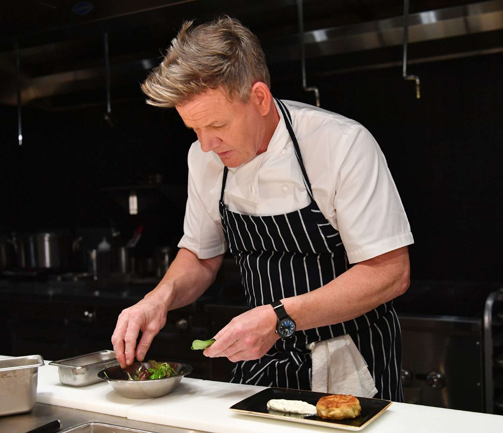
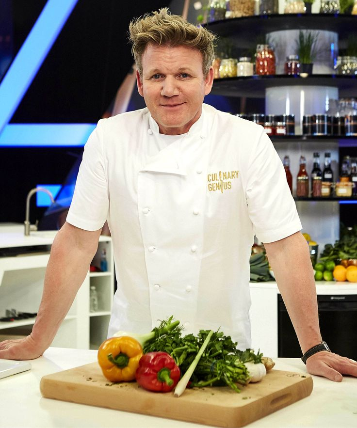
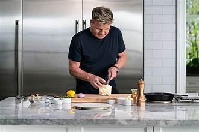

Gordon James Ramsay
Celebrity Chef
Gordon Ramsay is a celebrity chef who owns multiple restaurants, hosts television shows such as MasterChef and Hell's Kitchen, and has written over 20 books. Born in Scotland, he quit an early sporting career to become a well-known chef in London. By the early 2000s, he had created a name for himself on British television as the volatile host of Ramsay's Kitchen Nightmares and Hell's Kitchen, which had a successful run in the United States. Since then, the award-winning chef has developed his celebrity brand through programs like MasterChef and Next Level Chef, as well as built new restaurants throughout the world.


